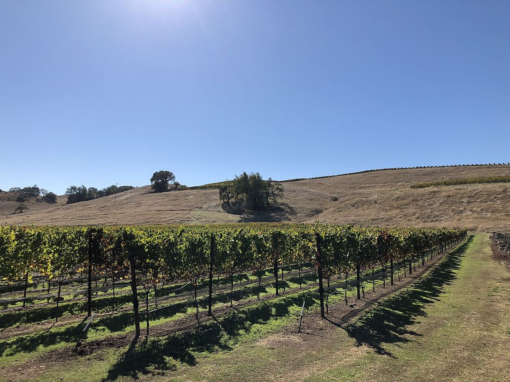

ROUGE
Accueil › États-Unis › Sonoma
Comté regroupant plusieurs AVASonoma
Le comté de Sonoma, entre le Pacifique et Napa, réunit une grande variété de climats et d’AVA, des zones fraîches de Russian River Valley et de Sonoma Coast aux vallées chaudes de Dry Creek et d’Alexander Valley.

Histoire
Sonoma est l’un des berceaux de la viticulture californienne. La mission franciscaine de San Francisco Solano, fondée en 1823 dans l’actuelle ville de Sonoma, planta des vignes et, en 1857, Agoston Haraszthy créa non loin de là la cave Buena Vista. À la fin du XIXe siècle, des immigrants italiens s’installèrent dans le nord du comté et plantèrent des vignes de zinfandel, dont certaines sont toujours en production. Après la Prohibition, le comté mit plus de temps que Napa à se tourner vers les vins de qualité, mais depuis les années 1970 il s’est affirmé avec un profil très divers, fondé sur une multitude de petites caves et de viticulteurs.
Climat et sols
Sonoma est bien plus vaste et variée que Napa. Son climat dépend surtout de la distance au Pacifique et des passages par lesquels pénètrent le brouillard et le vent marin, comme la vallée de la Russian River et la Petaluma Gap. Les zones proches de la côte et les terres basses de la Russian River sont fraîches, avec des matinées brumeuses, tandis que les vallées intérieures, abritées par les collines, sont chaudes et ensoleillées. Les sols comprennent des sables et des limons d’origine marine, comme le sol dit Goldridge de la Russian River, des dépôts alluviaux en fond de vallée et des sols volcaniques dans les monts Mayacamas.
Sous-zones
Le comté compte de nombreuses AVA. Parmi les plus connues figurent Russian River Valley, réputée pour son pinot noir et son chardonnay ; Sonoma Coast et sa sous-zone Fort Ross-Seaview, sur les hauteurs proches de la mer ; Petaluma Gap, définie par le vent ; Dry Creek Valley, terre classique du zinfandel ; Alexander Valley, plus chaude et connue pour son cabernet-sauvignon ; Sonoma Valley, près de la ville qui donne son nom au comté ; Knights Valley, Chalk Hill et la partie de Los Carneros partagée avec Napa. Certaines AVA, comme Northern Sonoma, englobent à leur tour plusieurs des précédentes, ce qui illustre le caractère superposé du système américain d’appellations.
Styles
La diversité des climats permet une large palette : pinot noir et chardonnay des zones fraîches, en vins tranquilles comme en base d’effervescents ; zinfandel de vieilles vignes, souvent avec de la petite sirah et du carignan ; cabernet-sauvignon et merlot des vallées les plus chaudes ; et sauvignon blanc. Le comté regroupant plusieurs AVA, les étiquettes peuvent indiquer Sonoma County ou une AVA plus précise.
Vins · Sonoma
ROUGE
Decoy Cabernet Sauvignon
Voir la fiche et où acheter ↗ROUGE
Jordan Cabernet Sauvignon
Voir la fiche et où acheter ↗BLANC
Jordan Chardonnay
Voir la fiche et où acheter ↗BLANC
La Crema Sonoma Coast Chardonnay
Voir la fiche et où acheter ↗ROUGE
La Crema Sonoma Coast Pinot Noir
Voir la fiche et où acheter ↗ROUGE
Geyserville
Voir la fiche et où acheter ↗ROUGE
Lytton Springs
Voir la fiche et où acheter ↗ROUGE